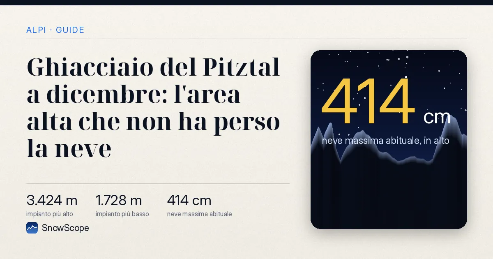
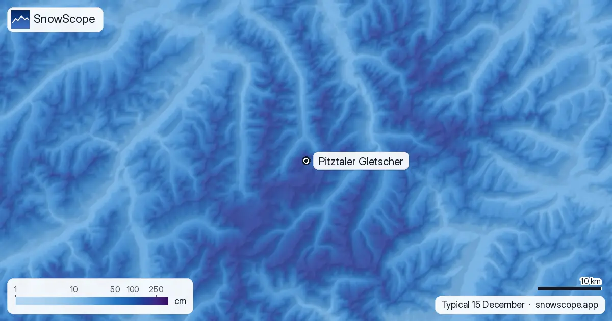

Ghiacciaio del Pitztal a dicembre: l'area alta che non ha perso la neve
La maggior parte delle curve di dicembre nelle Alpi scende. Il ghiacciaio del Pitztal fa eccezione: nei nostri 46 inverni di storico la sua media di dicembre a metà montagna (2576 m) è passata da 77 cm nei primi 15 inverni a 85 cm negli ultimi 15. Qui la neve è la parte sicura; il prezzo è la parte su cui riflettere.
Le previsioni neve in tempo reale per Pitztaler Gletscher nell'app SnowScopeAltezza neve, allerte powder e mappa 3D, gratis.
Dicembre, ieri e oggi
In vetta (3424 m) la media di dicembre è salita da 142 cm nei primi 15 inverni a 174 cm negli ultimi 15. Anche la stazione a valle (1728 m) è passata da 31 a 35 cm. Non significa che faccia più freddo: questo angolo alto e glaciale del Tirolo riceve ancora gran parte delle precipitazioni invernali come neve.
Nella settimana di Natale ognuno degli ultimi 15 inverni aveva almeno 30 cm a metà montagna, e la quota con 30 cm all'impianto più basso è salita dal 60 % al 67 %.


Le quote che rendono
Da metà montagna in su è la zona di dicembre. In un tipico 15 dicembre ci sono 87 cm a metà montagna e 171 cm in vetta. Nella settimana dal 15 al 21 dicembre tutti i nostri inverni avevano almeno 30 cm a entrambe le quote, e nell'85 % degli inverni la metà montagna aveva 60 cm o più nella settimana di Natale.
In basso è un'altra storia: 32 cm in un tipico 15 dicembre, e solo il 59 % degli inverni arrivava a 30 cm nella settimana dal 15 al 21 dicembre. Il primo giorno abituale con 30 cm laggiù è il 10 dicembre. Mettete in conto la discesa in impianto.
Il prezzo della settimana
Il listino ufficiale 2026-27 ha una sola tariffa per tutta la stagione: 77 EUR il giornaliero adulti e 410 EUR per 6 giorni. Nessuno sconto prima di Natale: non è una settimana economica, è una settimana affidabile.
Un extra utile sullo stesso listino: dagli skipass di 2 giorni in su è incluso un giorno al ghiacciaio del Kaunertal, al Winterberg Fendels o all'Hochzeiger. La vicina area del Rifflsee apre il 12 dicembre 2026.
Lo Stubai negli stessi anni
Il ghiacciaio dello Stubai, qualche valle più a est, ha quasi la stessa neve di dicembre a quota media: 86 cm a 2450 m in un tipico 15 dicembre, e il 100 % degli inverni con 30 cm nella settimana dal 15 al 21 dicembre. Il suo impianto più basso (1692 m) è un po' più innevato del Pitztal, con 40 cm.
Sul prezzo lo Stubai costa un po' meno: 75,50 EUR al giorno e 355 EUR per 6 giorni in alta stagione. L'argomento del Pitztal è la quota: con 3424 m la vetta supera i 3208 m dello Stubai.
Consigli per prenotare
Per la neve di dicembre più sicura, per una famiglia che non scia in cima, lo Stubai dà lo stesso manto a quota media spendendo un po' meno. Per il terreno alto, il giorno extra su un altro ghiacciaio e una tendenza a favore, il Pitztal vale il suo prezzo.
Consigli per sciatori
- Comprate almeno uno skipass di 2 giorni: aggiunge senza costi un giorno a Kaunertal, Fendels o Hochzeiger.
- A dicembre sciate da metà montagna in su (da circa 2576 m) e scendete a valle in impianto.
- A 3424 m a dicembre può fare freddissimo: proteggete viso e dita.
- Fuoripista su ghiacciaio: crepacci e valanghe, leggete il bollettino del Tirolo e andate con una guida.
Altre mappe (siti esterni)
Riferimenti e crediti
- Pitztaler Gletscher: official lift-pass prices (2026-27), checked 13 November 2026 www.pitztaler-gletscher.at/media/pt_price_winter_26_27.pdf
- Stubaier Gletscher: official lift-pass prices (2026-27), checked 13 November 2026 www.stubaier-gletscher.com/en/ski-area/prices/
Su questi numeri
Numeri della neve: storico neve SnowScope, 46 inverni passati (1980-81 - 2025-26) alle quote della località, corretto per la quota (una stima per un'area, non i bollettini della località); "buona neve" = 30 cm o più al suolo in media nella settimana. Mappa: la nostra altezza abituale al 15 dicembre distribuita sul terreno secondo la quota. Piste e impianti: mappatura OpenSkiMap. Skipass: listini ufficiali delle località, verificati il 13 novembre 2026; i prezzi possono cambiare.
Bollettini valanghe ufficiali: Avalanche.report – Euregio Tyrol
Cita questo articolo
Per ricerca, didattica o stampa: numeri e grafici sono liberamente riutilizzabili con licenza CC BY 4.0 citando così.
SnowScope (2026), Ghiacciaio del Pitztal a dicembre: l'area alta che non ha perso la neve, https://snowscope.app/blog/it/2026/11/pitztal-glacier-december-ski-snow-sure-price.html, consultato il 2026-11-14
SnowScope (Atlas Labs). (2026, November 14). Ghiacciaio del Pitztal a dicembre: l'area alta che non ha perso la neve. SnowScope snow reports. https://snowscope.app/blog/it/2026/11/pitztal-glacier-december-ski-snow-sure-price.html
BibTeX
@misc{snowscope2026pitztalglacierdecembersk,
author = {{SnowScope (Atlas Labs)}},
title = {Ghiacciaio del Pitztal a dicembre: l'area alta che non ha perso la neve},
year = {2026},
month = nov,
howpublished = {\url{https://snowscope.app/blog/it/2026/11/pitztal-glacier-december-ski-snow-sure-price.html}},
note = {Published 2026-11-14 14:54 UTC; accessed 2026-11-14}
}· CC BY 4.0 · Metodi, dati e strumenti →
Pitztaler Gletscher: neve e temperatura per quota, quest'inverno vs lo scorso (strumenti) →
Segui Pitztaler Gletscher
Gratis: un messaggio quando arriva la neve e il meteo ogni mattina.